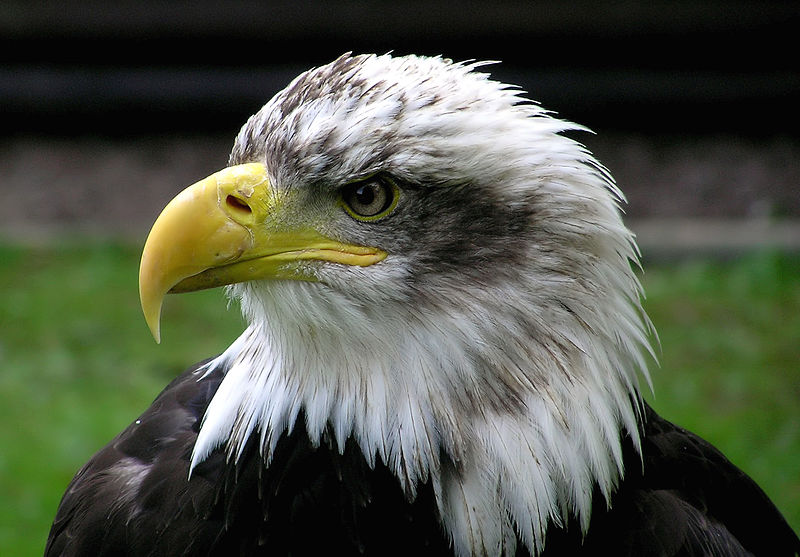
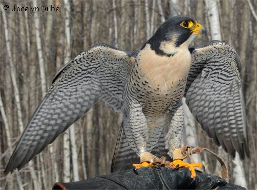
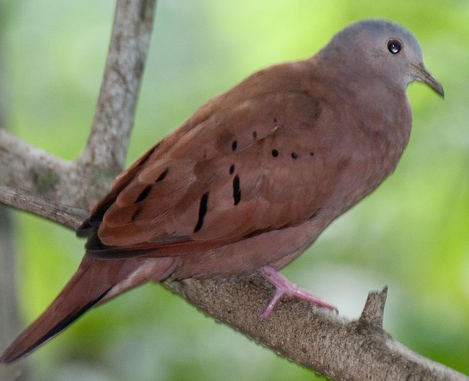
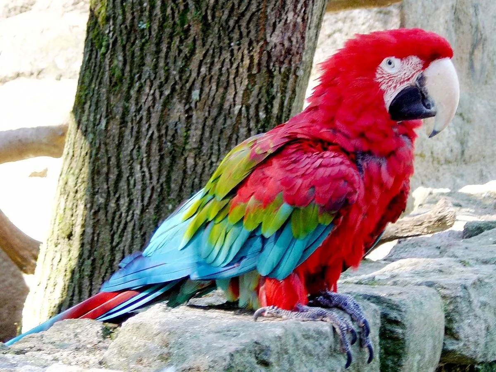
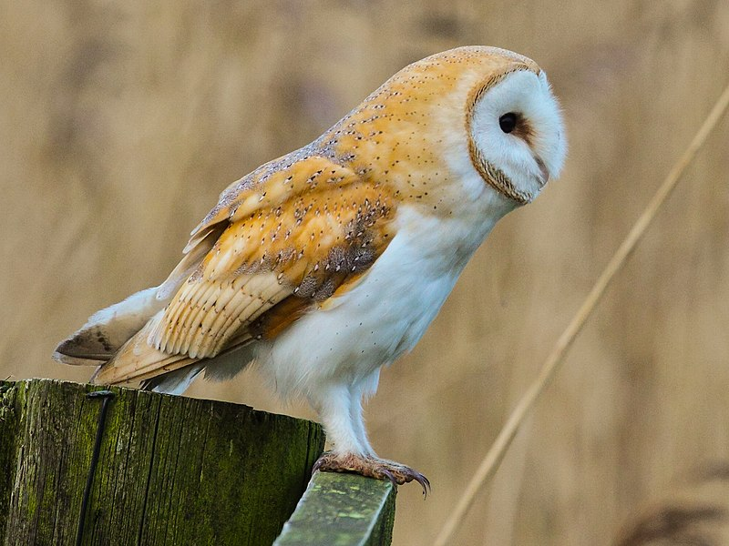

Les Passériformes
Les Passériformes, également connus sous le nom d'oiseaux chanteurs, forment l'ordre le
plus vaste et diversifié d'oiseaux, comprenant plus de la moitié de toutes les espèces d'oiseaux
connues. Voici quelques informations supplémentaires sur les Passériformes :
.jpg)
- Caractéristiques physiques : Les Passériformes se caractérisent par des pieds adaptés à la perche, avec trois doigts orientés vers l'avant et un vers l'arrière, ce qui facilite leur habillement sur les branches. Leur bec est également souvent conique, adapté à une alimentation variée.
- Répartition : Les Passériformes sont présents sur tous les continents, depuis les régions polaires jusqu'aux régions équatoriales. Ils occupent une grande diversité d'habitats, des forêts aux déserts en passant par les zones urbaines.
- Alimentation : Le régime alimentaire des Passériformes est très varié. Il peut inclure des graines, des fruits, des insectes, des nectars et même de petits vertébrés. Cette polyvalence alimentaire contribue à leur succès écologique.
- Comportement : Les oiseaux chanteurs sont souvent connus pour leurs compétences vocales complexes. Leur chant peut servir à marquer un territoire, à attirer un partenaire ou à communiquer avec d'autres membres de leur groupe.
- Reproduction : La plupart des Passériformes sont monogames et ont des nids bien construits. Les espèces varient considérablement en termes de taille de la couvée, du nombre d'œufs et des soins parentaux.
.jpg)
- Exemples de familles : Les Passériformes comprennent de nombreuses familles, dont les fringillidés (pinsons, chardonnerets), les Paridés (mésanges), les Turdidés (merles, grives), les Hirundinidés (hirondelles), et bien d'autres.
- Migrations : De nombreuses espèces de Passériformes sont migratrices, parcourant de longues distances entre leurs aires de reproduction et d'hivernage. Les migrations peuvent être spectaculaires et peuvent couvrir des milliers de kilomètres.
- Adaptation à l'environnement urbain : Certains Passériformes, tels que les moineaux domestiques, se sont bien adaptés aux environnements urbains et sont souvent associés à la présence humaine.
Les Passériformes sont incroyablement diversifiés, tant en termes de taille que de
comportement, et ils jouent un rôle essentiel dans les écosystèmes en tant que pollinisateurs,
contrôleurs d'insectes et indicateurs de la santé environnementale.
Les Accipitriformes
Les Accipitriformes sont un ordre d'oiseaux de proie diurnes, comprenant un certain
nombre de rapaces prédateurs. Voici quelques informations supplémentaires sur les Accipitriformes :

- Caractéristiques physiques : Les Accipitriformes partagent des caractéristiques physiques communes telles que des becs crochus et tranchants, des serres puissantes, une excellente vision, et des ailes larges et puissantes pour le vol.
- Répartition : On trouve des membres de l'ordre Accipitriformes sur tous les continents, à l'exception de l'Antarctique. Ils occupent une variété d'habitats, des forêts et des zones montagneuses aux zones ouvertes et aux plaines.
- Alimentation : Les Accipitriformes sont des prédateurs carnivores se nourrissant principalement de proies vivantes. Leur régime alimentaire peut comprendre des mammifères, des oiseaux, des reptiles, et même des poissons dans le cas de certaines espèces.
- Familles : Les Accipitriformes comprennent plusieurs familles, dont les Accipitridés, les Pandionidés, et les Sagittariidés. Les aigles, les buses, les balbuzards, et les vautours font partie de ces familles.
- Migration : Certaines espèces d'Accipitriformes sont migratrices et peuvent parcourir de grandes distances entre leurs aires de reproduction et d'hivernage. Ces migrations peuvent être spectaculaires et sont souvent observées dans les régions où ces oiseaux sont présents.
- Reproduction : La reproduction varie d'une espèce à l'autre, mais en général, les Accipitriformes construisent des nids volumineux situés en hauteur, souvent sur des arbres ou des falaises. Les couples peuvent rester ensemble pendant plusieurs saisons de reproduction.
- Rôle écologique : Les Accipitriformes jouent un rôle important dans le maintien de l'équilibre écologique en régulant les populations de petits mammifères et d'oiseaux. Certains, comme les vautours, ont un rôle écologique crucial en éliminant les carcasses d'animaux morts.
- Conservation : Certains membres de l'ordre, en particulier les vautours, sont confrontés à des défis de conservation en raison de menaces telles que l'empoisonnement, la perte d'habitat et la chasse.
Les Accipitriformes représentent un groupe fascinant d'oiseaux de proie, chacun adapté à
son propre environnement et jouant un rôle spécifique dans les écosystèmes auxquels ils appartiennent.
Les Falconiformes
Les Falconiformes, également connus sous le nom de faucons et rapaces apparentés, forment
un ordre d'oiseaux de proie diurnes. Voici quelques informations supplémentaires sur les Falconiformes :

- Caractéristiques physiques : Les Falconiformes partagent certaines caractéristiques physiques avec les Accipitriformes, tels que des becs crochus et tranchants, des serres puissantes et une excellente vision. Cependant, les Falconiformes ont souvent des ailes plus étroites et une silhouette plus élancée, adaptées à un vol rapide et agile.
- Répartition : Les Falconiformes sont présents sur tous les continents à l'exception de l'Antarctique. Ils occupent divers habitats, des zones ouvertes aux forêts, en passant par les zones montagneuses.
- Alimentation : Les Falconiformes sont des prédateurs carnivores se nourrissant principalement de proies vivantes. Contrairement à d'autres rapaces qui chassent en planant, les faucons sont connus pour leur technique de chasse en piqué, où ils plongent rapidement sur leurs proies.
- Familles : Les Falconiformes comprennent plusieurs familles, dont les Falconidés et les Sagittariidés. Les faucons, les caracaras et les crécerelles font partie de ces familles.
- Vol : Les Falconiformes sont réputés pour leur vol rapide et acrobatique. Les faucons en particulier sont capables de voler à des vitesses élevées, parfois en excédant 300 kilomètres par heure en descente.
- Reproduction : Les faucons construisent généralement des nids sur des falaises, des arbres ou même sur des bâtiments. Les couples de faucons peuvent être monogames et rester ensemble pendant plusieurs saisons de reproduction.
- Rôle écologique : Les Falconiformes jouent un rôle crucial dans le contrôle des populations de petits mammifères et d'oiseaux. Leur présence contribue à l'équilibre des écosystèmes.
- Domestication : Certains faucons, en particulier le faucon pèlerin, ont été utilisés historiquement dans la fauconnerie, une pratique ancienne de chasse où des oiseaux de proie sont dressés pour capturer des proies pour les fauconniers.
- Conservation : Certains faucons peuvent être confrontés à des menaces telles que la perte d'habitat, l'empoisonnement par les pesticides, et la chasse illégale.
Les Falconiformes représentent un groupe diversifié d'oiseaux de proie, adaptés à des
modes de vie variés et jouant des rôles importants dans leurs écosystèmes respectifs.
Les Columbiformes
Les Columbiformes forment un ordre d'oiseaux qui comprend les colombes et les
tourterelles. Voici quelques informations supplémentaires sur les Columbiformes :


- Caractéristiques physiques : Les Columbiformes ont généralement un corps arrondi, une petite tête, un bec droit et des pattes courtes. Leurs pattes sont adaptées à la perche, et ils ont souvent une démarche caractéristique de picorage.
- Répartition : Les colombes et les tourterelles sont présentes sur tous les continents, à l'exception de l'Antarctique. Elles occupent divers habitats, des forêts aux zones urbaines.
- Alimentation : Les Columbiformes sont principalement herbivores, se nourrissant de graines, de fruits et parfois d'insectes. Ils ont une digestion spécialisée qui leur permet de consommer des graines dures.
- Comportement : Les colombes sont souvent associées à la paix et à la tranquillité en raison de leur comportement calme et de leurs vocalisations douces. Certaines espèces sont connues pour leur capacité à effectuer des vols longue distance.
- Reproduction : Les colombes forment généralement des couples monogames et peuvent produire plusieurs couvées par an. Le nid est souvent construit avec des brindilles et peut être situé dans les arbres, sur les corniches des bâtiments ou même sur le sol.
- Communication : Les Columbiformes utilisent des vocalisations douces pour communiquer entre eux. Les tourterelles sont parfois connues pour leur roucoulement caractéristique.
- Espèces notables : Parmi les Columbiformes, on trouve des espèces familières comme la colombe domestique (Colomba livia), souvent élevée comme oiseau de compagnie, et la tourterelle triste (Zenaida macroura), présente en Amérique du Nord.
- Importance culturelle : Les colombes sont parfois symboliques dans de nombreuses cultures et religions, souvent associées à la paix, à l'amour et à la spiritualité.
- Conservation : Dans l'ensemble, de nombreuses espèces de Columbiformes ne sont pas considérées comme menacées. Cependant, la destruction de l'habitat, la chasse et d'autres pressions humaines peuvent affecter certaines populations.
Les Columbiformes sont des oiseaux répandus et familiers, et bien qu'ils puissent
sembler simples, ils jouent un rôle important dans les écosystèmes où ils vivent. Leur proximité avec
les humains les a également rendus significatifs sur le plan culturel.
Les Psittaciformes
Les Psittaciformes forment un ordre d'oiseaux qui comprend les perroquets, les cacatoès,
les perruches et d'autres espèces connexes. Voici quelques informations supplémentaires sur les
Psittaciformes :

- Caractéristiques physiques : Les Psittaciformes sont caractérisés par leur bec puissant et crochu, adapté à la fois pour casser les graines et manipuler les objets. Ils ont également des pattes zygodactyles, avec deux doigts orientés vers l'avant et deux vers l'arrière, ce qui facilite leur grimper et leur manipulation d'objets.
- Répartition : Les perroquets sont originaires de nombreuses régions du monde, principalement des zones tropicales et subtropicales. Ils se trouvent en Amérique du Sud, en Australie, en Afrique, en Asie et dans certaines îles du Pacifique.
- Diversité : Les Psittaciformes sont incroyablement diversifiés en termes de taille, de couleur et de comportement. Ils varient de petites perruches aux grands aras et cacatoès.
- Alimentation : Le régime alimentaire des Psittaciformes est varié et peut inclure des graines, des fruits, des noix, des baies, des nectars et des insectes. Certains perroquets domestiques peuvent également être nourris avec des aliments spécialement formulés.
- Intelligence : Les perroquets sont connus pour leur intelligence élevée et leur capacité à apprendre des comportements complexes. Certains peuvent imiter les sons, y compris la parole humaine, et ont une bonne mémoire.
- Vocalisations : Les Psittaciformes sont réputés pour leurs vocalisations variées. Certains perroquets, comme les aras et les cacatoès, peuvent être particulièrement bruyants. Les perruches et les inséparables sont également connus pour leurs vocalisations.
- Sociabilité : Beaucoup de perroquets sont des animaux sociaux qui vivent en groupes dans la nature. Certains, comme les aras, peuvent former des liens étroits avec leurs propriétaires humains.
- Reproduction : Les Psittaciformes se reproduisent en construisant des nids, souvent dans des creux d'arbres. Certains perroquets, comme les cacatoès, forment des liens monogames durables, tandis que d'autres peuvent être plus sociaux dans leurs relations.
- Élevage en captivité : En raison de leur beauté, de leur intelligence et de leur capacité à apprendre, de nombreux Psittaciformes sont élevés en captivité comme animaux de compagnie. Cependant, l'élevage responsable et la fourniture d'un environnement stimulant sont essentiels pour leur bien-être.
- Conservation : Certains Psittaciformes sont menacés en raison de la perte d'habitat, du commerce illégal d'oiseaux et d'autres menaces. Des efforts de conservation sont déployés pour protéger ces espèces et leurs habitats.
Les Psittaciformes sont des oiseaux fascinants, à la fois dans leur environnement
naturel et en tant qu'animaux de compagnie. Cependant, en raison de leur intelligence et de leurs
besoins spécifiques, ils nécessitent des soins attentifs et une compréhension approfondie de leurs
besoins pour prospérer en captivité.
Les Strigiformes
Les Strigiformes constituent l'ordre des oiseaux de proie nocturnes, englobant les hiboux
et les chouettes. Voici quelques informations supplémentaires sur les Strigiformes :

- Caractéristiques physiques : Les Strigiformes se distinguent par leurs grands yeux frontaux, adaptés à une vision nocturne exceptionnelle. Ils ont également une excellente audition, facilitée par des disques faciaux qui concentrent les sons vers leurs oreilles asymétriques.
- Répartition : Les hiboux et les chouettes sont présents sur tous les continents, à l'exception de l'Antarctique. Ils occupent une variété d'habitats, allant des forêts aux zones semi-arides, et sont souvent associés aux zones boisées.
- Alimentation : Les Strigiformes sont des prédateurs carnivores qui se nourrissent principalement de petits mammifères, d'insectes, de reptiles et d'autres oiseaux. Leurs serres et leur bec crochu sont adaptés à la capture et à la consommation de proies.
- Vols silencieux : Les Strigiformes sont connus pour leur vol silencieux. Leur plumage spécialisé permet d'atténuer le bruit du vol, ce qui est essentiel pour la chasse nocturne.
- Comportement : Les hiboux et les chouettes sont principalement nocturnes, ce qui signifie qu'ils sont actifs la nuit. Leur comportement de chasse est souvent solitaire, bien que certaines espèces puissent être plus sociales.
- Reproduction : Les Strigiformes construisent généralement des nids dans des endroits abrités, tels que des creux d'arbres, des cavités rocheuses ou des bâtiments abandonnés. La plupart sont monogames pendant la saison de reproduction.
- Mimétisme : Certains Strigiformes ont un plumage qui les camoufle efficacement avec leur environnement, ce qui les aide à se dissimuler pendant la journée lorsqu'ils sont inactifs.
- Espèces notables : Parmi les Strigiformes, on trouve des espèces emblématiques telles que le grand-duc d'Amérique, le hibou grand-duc, la chouette effraie et le hibou des marais.
- Symbolisme : Les hiboux et les chouettes sont souvent associés à des symboles dans différentes cultures, allant de la sagesse à la magie ou même à la malchance dans certaines traditions.
- Conservation : Certains Strigiformes peuvent être confrontés à des menaces telles que la perte d'habitat, la pollution, et parfois, la persécution directe. La conservation des habitats boisés et la sensibilisation sont importantes pour leur préservation.
Les Strigiformes sont des prédateurs nocturnes fascinants, jouant un rôle crucial dans
la régulation des populations d'insectes et de petits mammifères. Leurs adaptations spécifiques en font
des chasseurs redoutables dans l'obscurité de la nuit.
.png "Voir le profile")